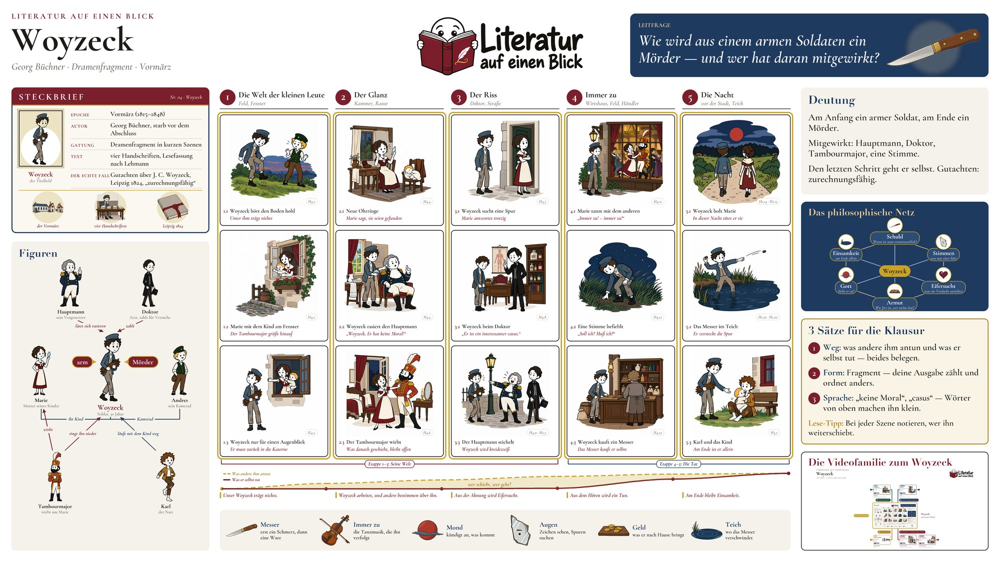

Literatur auf einen Blick · Folge 04
Woyzeck
Georg Büchner · Dramenfragment · Vormärz
LeitfrageWie wird aus einem armen Soldaten ein Mörder — und wer hat daran mitgewirkt?
Ein armer Soldat bringt seinen Lohn nach Hause, rasiert einen Hauptmann, der ihn verspottet, und lässt sich von einem Doktor für Geld untersuchen. Am Ende tötet er Marie. Wie wird aus einem armen Soldaten ein Mörder, und wer hat daran mitgewirkt?
Das Lernplakat
Alles, was im Video entsteht, auf einem Blatt: die fünf Etappen der Handlung, die Figuren und ihre Beziehungen, die Symbole, die Deutung und drei Sätze für die Klausur.
Plakat herunterladen PNG · 9600 × 5400 px · 14.3 MB · für den Druck bis DIN A1 Kleinere Fassung JPG · 4800 × 2700 px · für Bildschirm und Tablet


Zum Lernen und für den Unterricht. Bitte unverändert weitergeben und den Kanal nennen.

Drei Sätze für die Klausur
- Weg: was andere ihm antun und was er selbst tut — beides belegen.
- Form: Fragment — deine Ausgabe zählt und ordnet anders.
- Sprache: „keine Moral“, „casus“ — Wörter von oben machen ihn klein.
Deutung
Am Anfang ein armer Soldat, am Ende ein Mörder.
Mitgewirkt: Hauptmann, Doktor, Tambourmajor, eine Stimme.
Den letzten Schritt geht er selbst. Gutachten: zurechnungsfähig.
Die Handlung in fünf Etappen
- Die Welt der kleinen Leute Feld, Fenster
- Der Glanz Kammer, Rasur
- Der Riss Doktor, Straße
- Immer zu Wirtshaus, Feld, Händler
- Die Nacht vor der Stadt, Teich
Figuren
- Woyzeck Soldat, 30 Jahre
- Marie Mutter seines Kindes
- Andres sein Kamerad
- Hauptmann sein Vorgesetzter
- Doktor Arzt, zahlt für Versuche
- Tambourmajor wirbt um Marie
- Karl der Narr
Symbole
- Messer erst ein Schmerz, dann eine Ware
- Immer zu die Tanzmusik, die ihn verfolgt
- Mond kündigt an, was kommt
- Augen Zeichen sehen, Spuren suchen
- Geld was er nach Hause bringt
- Teich wo das Messer verschwindet
Steckbrief
- Epoche
- Vormärz (1815–1848)
- Autor
- Georg Büchner, starb vor dem Abschluss
- Gattung
- Dramenfragment in kurzen Szenen
- Text
- vier Handschriften, Lesefassung nach Lehmann
- Der echte Fall
- Gutachten über J. C. Woyzeck, Leipzig 1824, „zurechnungsfähig“
Kapitel im Video
- 0:00 Einstieg
- 0:48 Steckbrief
- 1:13 Der Bauplan
- 1:38 Etappe 1: Die Welt der kleinen Leute
- 2:31 Etappe 2: Der Glanz
- 3:11 Etappe 3: Der Riss
- 4:02 Etappe 4: Immer zu
- 4:57 Etappe 5: Die Nacht
- 6:27 Die Figuren
- 6:47 Symbole
- 7:05 Deutung
- 7:55 Das philosophische Netz
- 8:21 Drei Sätze für die Klausur
- 8:47 Das ganze Poster
Grundlage sind Büchners Handschriften H1 bis H4 in der Lesefassung nach der kritischen Edition von Werner R. Lehmann (Zeno.org). Das Stück blieb ein Fragment; Schulausgaben ordnen und zählen die Szenen teils anders.
In dem Stück wird ein Mensch getötet. Wenn es dir nicht gut geht: Die Telefonseelsorge ist rund um die Uhr erreichbar, anonym und kostenlos, unter 0800 111 0 111 oder 0800 111 0 222.
Die Videos zum Werk
Das Hauptvideo ist der Stamm. Die Äste führen tiefer ins Werk: einzelne Stellen am Text, die Figuren, die Deutung und die Klausur. Was noch fehlt, ist in Arbeit und erscheint im Kanal.
Szene unter der Lupe
ein Auftritt, eine Stelle, ganz nah am Text
- S1 Die Rasur Er hat keine Moral Unter der Lupe in Arbeit
- S2 Der Doktor Ein interessanter casus Unter der Lupe in Arbeit
Figur im Fokus
wer sie sind und was der Autor an ihnen zeigt
- F1 Marie Was sie weiß, was sie sagt in Arbeit
Verstehen
der Bauplan, die Symbole, die Philosophie dahinter
- V1 Fragment Warum Woyzeck kein Ende hat in Arbeit
Klausur
was in der Prüfung gefragt wird und wie du es schreibst
- K1 Szenenanalyse Drama in Arbeit